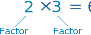

All Factors of a Number
Go straight to Factors Calculator.
| Factors are the numbers you multiply together to get another number: |
 |
There can be many factors of a number.
Example: All the factors of 12
- 2 × 6 = 12,
- but also 3 × 4 = 12,
- and of course 1 × 12 = 12.
So 1, 2, 3, 4, 6 and 12 are factors of 12.
And also -1,-2,-3,-4,-6 and -12, because you get a positive number when you multiply two negatives, such as (-2)×(-6) = 12
Answer: 1, 2, 3, 4, 6, 12, -1, -2, -3, -4, -6, -12
No Fractions!
Factors are usually positive or negative whole numbers (no fractions), so ½ × 24 = 12 is not listed.
All Factors Calculator
This calculator will find all the factors of a number (not just the prime factors). It works on numbers up to 4,294,967,295. Try it and see.
Note: Negative numbers are also included, as multiplying two negatives makes a positive.
How Can I Do It Myself?
Work from the outside in!
Example: All the factors of 20.
Start at 1: 1×20=20, so put 1 at the start, and put its "partner" 20 at the other end:
| 1 | 20 |
Then try 2. 2×10=20 works, so put in 2 and 10:
| 1 | 2 | 10 | 20 |
Then try 3. 3 doesn't work (3×6=18 is too low, 3×7=21 is too high).
Then try 4. 4×5=20 works, so put them in:
| 1 | 2 | 4 | 5 | 10 | 20 |
There is no whole number between 4 and 5 so you are done! (Don't forget the negative ones).
| 1 | 2 | 4 | 5 | 10 | 20 |
| -1 | -2 | -4 | -5 | -10 | -20 |
Is That How The Calculator Works?
Actually the calculator first works out the prime factors, then combines them together to discover all other numbers that can be multiplied to achieve your number.